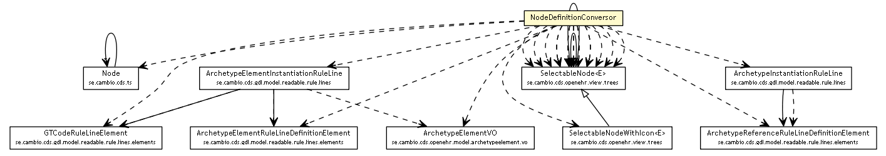

se.cambio.cds.gdl.editor.view.util
Class NodeDefinitionConversor

java.lang.Object
 se.cambio.cds.gdl.editor.view.util.NodeDefinitionConversor
se.cambio.cds.gdl.editor.view.util.NodeDefinitionConversor
public class NodeDefinitionConversor
- extends Object
|
Method Summary |
static void |
addElementInstanceAttributesAndFunctionsToNode(Collection<RuleLine> ruleLines,
SelectableNode<Object> node,
boolean onlyCDSDomain)
|
static void |
addElementInstanceToNode(Collection<RuleLine> ruleLines,
SelectableNode<Object> node,
boolean onlyCDSDomain)
|
static void |
addFieldsToNode(SelectableNode<Object> node,
String rmName,
GTCodeRuleLineElement gtCodeRuleLineElement)
|
static void |
addFuntionsToNode(SelectableNode<Object> node,
String rmName,
GTCodeRuleLineElement gtCodeRuleLineElement)
|
static SelectableNode<Object> |
getArchetypeElementRuleLineElementNode(ArchetypeElementInstantiationRuleLine aeirl,
boolean onlyCDSDomain)
|
static SelectableNode<Object> |
getArchetypeElementRuleLineElementNode(ArchetypeInstantiationRuleLine airl,
boolean onlyCDSDomain)
|
static SelectableNode<Object> |
getArchetypeInstancesSelectionNodes(Collection<RuleLine> definitionRuleLines,
boolean onlyCDSDomain)
|
static SelectableNode<Object> |
getCurrentDateTimeArchetypeElementRuleLineElementNode(GTCodeRuleLineElement currentDateTimeGTCodeRuleLineElement)
|
static SelectableNode<Object> |
getElementInstancesSelectionNodes(Collection<RuleLine> definitionRuleLines,
boolean onlyCDSDomain)
|
static SelectableNode<Object> |
getElementsInArchetypeNode(String idArchetype,
String idTemplate)
|
static ImageIcon |
getIcons(GTCodeRuleLineElement gtCodeRuleLineElement)
|
static ImageIcon |
getIconsArchetypeElement(ArchetypeElementRuleLineDefinitionElement aerlde)
|
static ImageIcon |
getIconsArchetypeReference(ArchetypeReferenceRuleLineDefinitionElement arrlde)
|
static SelectableNode<Object> |
getNodeAllTerminologyCodes(String terminologyId,
Collection<String> selectedCodes)
|
static SelectableNode<Object> |
getNodeAttributesAndFunctions(Collection<RuleLine> definitionRuleLines,
boolean onlyCDSDomain)
|
static SelectableNode<Object> |
getNodeGTCodes(Map<String,Term> termsMap,
Collection<String> gtCodesToBeIgnored)
|
static SelectableNode<Object> |
getNodeTerminologyIds()
|
static SelectableNode<Object> |
getSelectableNodeTerminologyCodes(Node node,
Collection<String> selectedCodes)
|
static SelectableNode<Object> |
getSingleNodeAttributesAndFunctions()
|
| Methods inherited from class java.lang.Object |
clone, equals, finalize, getClass, hashCode, notify, notifyAll, toString, wait, wait, wait |
NodeDefinitionConversor
public NodeDefinitionConversor()
getElementInstancesSelectionNodes
public static SelectableNode<Object> getElementInstancesSelectionNodes(Collection<RuleLine> definitionRuleLines,
boolean onlyCDSDomain)
addElementInstanceToNode
public static void addElementInstanceToNode(Collection<RuleLine> ruleLines,
SelectableNode<Object> node,
boolean onlyCDSDomain)
getArchetypeInstancesSelectionNodes
public static SelectableNode<Object> getArchetypeInstancesSelectionNodes(Collection<RuleLine> definitionRuleLines,
boolean onlyCDSDomain)
getArchetypeElementRuleLineElementNode
public static SelectableNode<Object> getArchetypeElementRuleLineElementNode(ArchetypeInstantiationRuleLine airl,
boolean onlyCDSDomain)
getArchetypeElementRuleLineElementNode
public static SelectableNode<Object> getArchetypeElementRuleLineElementNode(ArchetypeElementInstantiationRuleLine aeirl,
boolean onlyCDSDomain)
getCurrentDateTimeArchetypeElementRuleLineElementNode
public static SelectableNode<Object> getCurrentDateTimeArchetypeElementRuleLineElementNode(GTCodeRuleLineElement currentDateTimeGTCodeRuleLineElement)
getIcons
public static ImageIcon getIcons(GTCodeRuleLineElement gtCodeRuleLineElement)
getIconsArchetypeElement
public static ImageIcon getIconsArchetypeElement(ArchetypeElementRuleLineDefinitionElement aerlde)
getIconsArchetypeReference
public static ImageIcon getIconsArchetypeReference(ArchetypeReferenceRuleLineDefinitionElement arrlde)
getElementsInArchetypeNode
public static SelectableNode<Object> getElementsInArchetypeNode(String idArchetype,
String idTemplate)
addElementInstanceAttributesAndFunctionsToNode
public static void addElementInstanceAttributesAndFunctionsToNode(Collection<RuleLine> ruleLines,
SelectableNode<Object> node,
boolean onlyCDSDomain)
addFieldsToNode
public static void addFieldsToNode(SelectableNode<Object> node,
String rmName,
GTCodeRuleLineElement gtCodeRuleLineElement)
addFuntionsToNode
public static void addFuntionsToNode(SelectableNode<Object> node,
String rmName,
GTCodeRuleLineElement gtCodeRuleLineElement)
getSingleNodeAttributesAndFunctions
public static SelectableNode<Object> getSingleNodeAttributesAndFunctions()
getNodeAttributesAndFunctions
public static SelectableNode<Object> getNodeAttributesAndFunctions(Collection<RuleLine> definitionRuleLines,
boolean onlyCDSDomain)
getNodeGTCodes
public static SelectableNode<Object> getNodeGTCodes(Map<String,Term> termsMap,
Collection<String> gtCodesToBeIgnored)
getNodeTerminologyIds
public static SelectableNode<Object> getNodeTerminologyIds()
getNodeAllTerminologyCodes
public static SelectableNode<Object> getNodeAllTerminologyCodes(String terminologyId,
Collection<String> selectedCodes)
getSelectableNodeTerminologyCodes
public static SelectableNode<Object> getSelectableNodeTerminologyCodes(Node node,
Collection<String> selectedCodes)
Copyright © 2013 Cambio. All Rights Reserved.